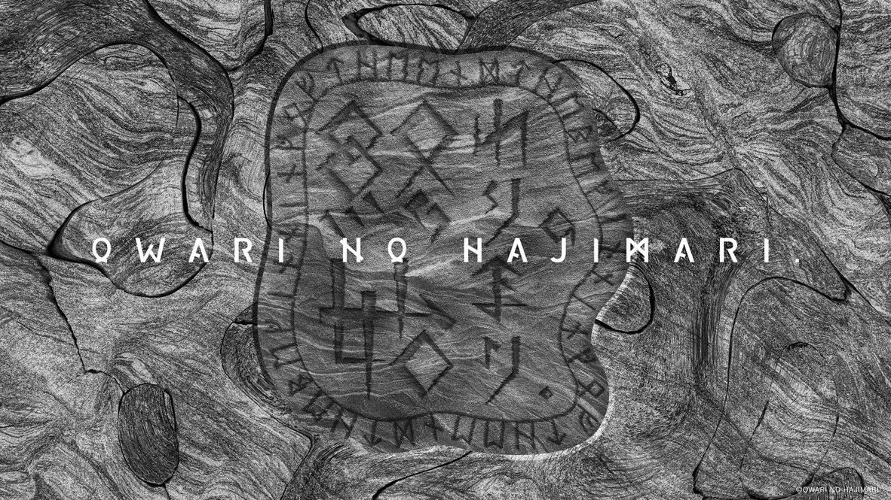

OWARI NO HAJIMARI. / OFFICIAL
終わりの始まり。
Created 高世 圭
SCROLL ↓01 / 終わりの始まり。Official
MUSIC / VISUAL / ARTOfficial
歌えるもんなら
歌ってみやがれ
02 / 高世 圭
TAKASE KEI03 / LIVER
NEHAN04 / 間 -AWAI-
OBJECTS / DIGITAL終わりを恐れず、
始まりを愉しむ。
ただ、間に在る事。
間 -AWAI-

OWARI NO HAJIMARI. / OFFICIAL
Created 高世 圭
SCROLL ↓01 / 終わりの始まり。Official
MUSIC / VISUAL / ART歌えるもんなら
歌ってみやがれ
02 / 高世 圭
TAKASE KEI03 / LIVER
NEHAN04 / 間 -AWAI-
OBJECTS / DIGITAL終わりを恐れず、
始まりを愉しむ。
ただ、間に在る事。
間 -AWAI-